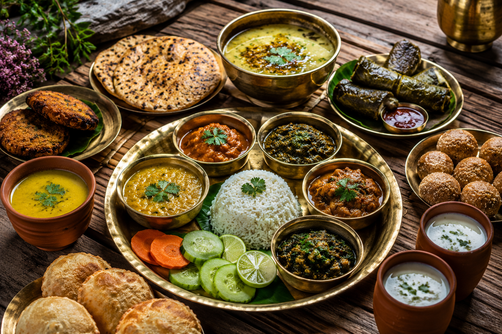

01
Rishikesh
The Yoga Capital of the World — famous for Ganga Aarti, suspension bridges, yoga ashrams, and white-water rafting.

Discover the land of the Himalayas (Devbhoomi), sacred pilgrimage shrines, pine-clad valleys, holy rivers, and breathtaking mountain vistas.
Explore Uttarakhand ↓Uttarakhand is a serene Himalayan state revered for its ancient temples, snow-covered mountain peaks, holy river sources of the Ganga and Yamuna, and scenic alpine forests.
From the spiritual serenity of Haridwar and Rishikesh to the charming lakes of Nainital, colonial hills of Mussoorie, and sacred high-altitude trails of Kedarnath, Uttarakhand offers peace and adventure alike.
Famous hill towns, spiritual shrines, and scenic Himalayan valleys.
The Yoga Capital of the World — famous for Ganga Aarti, suspension bridges, yoga ashrams, and white-water rafting.

A tranquil lake city surrounded by seven emerald hills, scenic viewpoints, boating, and vibrant mall road walks.

The Queen of Hills — celebrated for colonial architecture, Kempty Falls, pleasant weather, and Doon Valley sunsets.

One of the twelve sacred Jyotirlingas, situated at 3,583 meters above sea level against dramatic snow peaks.
Pahari cuisine is wholesome, warm, and nutritious — crafted using organic mountain millets, wild herbs, lentils, and slow-cooking traditions.

Deep-rooted Himalayan folk traditions, traditional wooden architecture, and Pandav Nritya ritual dances.
Famous for Aipan ceremonial floor art, intricate temple carvings, and sweet musical folk tales.
Instruments like Dhol-Damau, Ransingha, and soulful Jhora-Chanchari songs reflecting mountain seasons.
World-famous Kumbh Mela, Nanda Devi Raj Jat Yatra, and vibrant local village temple fairs (Kauthig).
Discover all 28 states, local food recipes, and historic travel destinations.
← Back to All States